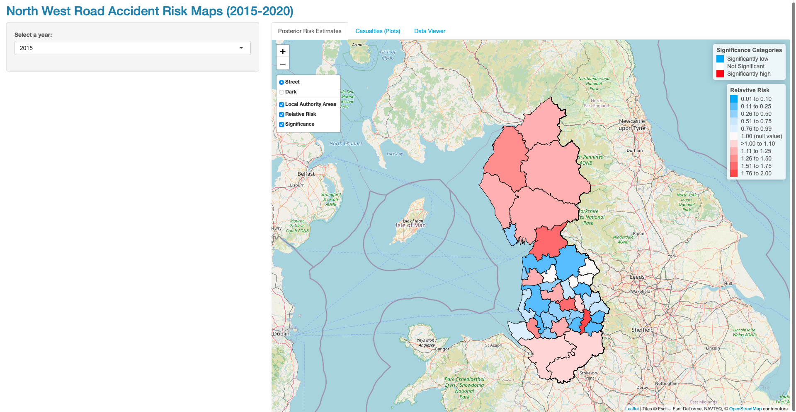
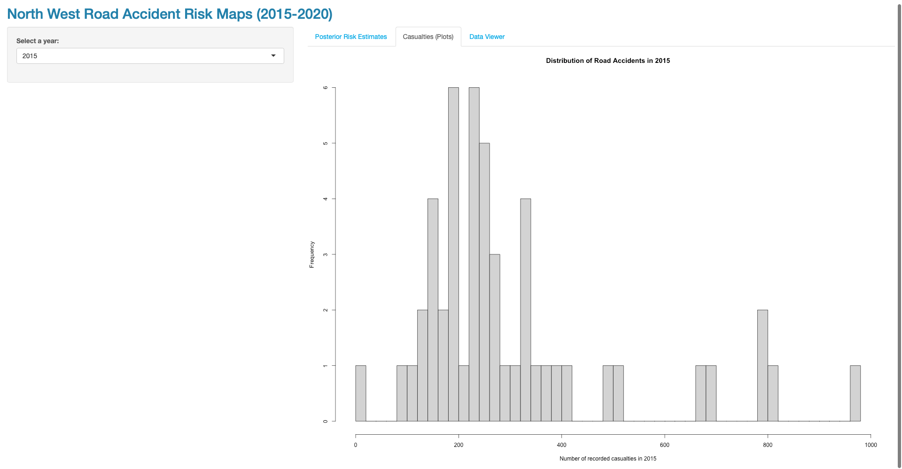
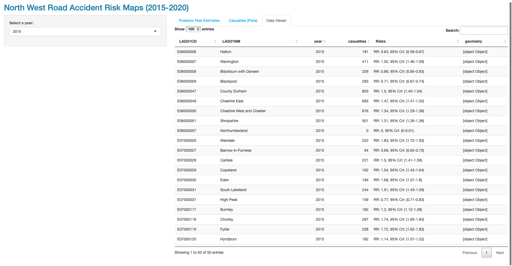

7 Web & Geovisualisation using R-Shiny
Theme: R Shiny Dashboards

7.1 Introduction
Shiny is a web application framework for R that enables to build an interactive and reactive GIS dashboards that can be used as a web applications. This tutorial provides a basic introduction to Shiny. As discussed in the lecture, a Shiny application can be built by creating a directory that contains an R script named as app.R. The code in the app.R has three parts:
a user interface object (
ui) which controls the layout and appearance of the app,a
server()function with the instructions to build the objects displayed in theui(and for further data cleaning)a call function the to
shinyApp()that creates the app from the ui/server pair.
This is very easy to master if you understand the workflow. Let’s learn by focusing on the outputs generated previously from week 8’s practicals which focused on applying spatial and spatiotemporal models to road accident data from 2015 to 2020. We will create a generic-reactive dashboard for the North West’s Local Authority areas with layouts that swaps through the following items:
Relative risk (RR) [Map 1]
95% credible intervals (95% Credibility Intervals) [Map 2]
Histogram plots for the casualties [Graphical plot]
Data viewer [Dataset]
Downloadable dataset(s)
All datasets can be downloaded from HERE.
Recommended reading list
Books
Moraga. P, (2020). Geospatial Health Data: Modeling and Visualization with R-INLA & Shiny, Ebook
Chapter 13: Introduction to Shiny
Chapter 15: Building a Shiny app to upload and visualize spatio-temporal data
Wickham. H, (2021). Mastering Shiny: Building Interactive Apps, Reports & Dashboards Powered by R, Ebook
Very helpful tutorial videos
Gibert. C. YouTube Video (01h17m05s): Make Your Own Interactive Map of COVID-19 Spread Using R Shiny
Gibert. C. YouTube Video (00h58m55s): R Shiny Overview & Tutorial
7.2 Installing and loading packages
Here is the description of the following packages we will need for this exercise:
sf: Simple Featurestmap: Thematic Mappingshiny: Shiny is an R package that makes it easy to build interactive web apps and dashboards straight from Rshinythemes: Shinythemes package provides some several themes for use with Shinyhtmlwidgets: A framework for creating HTML widgets that render in various contexts including the R consoleleaflet: An R package makes it easy to integrate and control Leaflet maps in RDT: An R package DT provides an R interface to the JavaScript library DataTablesdplyr: A fast, consistent tool for working with data frame like objects, both in memory and out of memory.
We have already installed the packages sf and tmap from previous sessions (i.e., GEOG0114 Principles of Spatial Analysis). Let us install the other packages.
# install
install.packages("shiny")
install.packages("shinythemes")
install.packages("htmlwidgets")
install.packages("leaflet")
install.packages("DT")
install.packages("dplyr")Load the packages into RStudio
library(htmlwidgets)
library(shiny)
library(shinythemes)
library(leaflet)
library(tmap)
library(DT)
library(sf)
library(dplyr)7.3 Data Preparation
For the Shiny application to work - all dataset(s) must be stored in the same directory location folder. Create a folder in your computer and store the RDS formatted spatial data frame Road Accidents Output Data.RDS, and the shapefile North_West_LAs.shp in that location. Set your directory and load data sets into memory:
# set your main directory
setwd("/Volumes/Anwar-HHD/GEOG0125/Practicals/Shiny")
# open the RDS format for Shiny
la.spatial.df <- readRDS("Road Accidents Output Data.RDS")
# load shape files
laboundaries <- read_sf("North_West_LAs.shp")Tips for coursework 1: After you have performed your Bayesian model be sure to extract the relevant posterior estimates according with whatever spatial information its associated with and store the results as an RDS using the saveRDS() function. This is the best file format to work with when dealing with shiny
7.4 Concept for R-Shiny-ing
Code overview
There are three parts to the code, so let’s break it down…
# Do not run
#Part 1: Define User Interface for application
ui <- fluidPage(
)
# Part 2: Define server logic
server <- function(input, output) {
# create a reactive function
}
#Part 3: Run shiny app
shinyApp(ui = ui, server = server)Part 1: The User Interface
We build a user interface (UI) with a sidebar layout. This layout includes a title panel, a sidebar panel for inputs on the left, and a main panel for outputs on the right. The elements of the user interface are placed within the fluidPage() function and this permits the app to adjust automatically to the dimensions of the browser window. The title of the app is added with titlePanel(). Then we write sidebarLayout() to create a sidebar layout with input and output definitions. sidebarLayout() takes the arguments sidebarPanel() and mainPanel(). sidebarPanel() creates a sidebar panel for inputs on the left. The mainPanel() creates a main panel for displaying outputs on the right.
We can add content to the app by passing it as an argument to titlePanel(), sidebarPanel(), and mainPanel(). Here we have added texts with the description of the panels. Note that to include multiple elements in the same panel, we need to separate them with commas.
The skeletal of the code for UI is something like this:
# Do not run
#Part 1: Define User Interface for application
ui <- fluidPage(
titlePanel("insert title"),
sidebarLayout(
sidebarPanel("sidebar panel for inputs"),
mainPanel("main panel for outputs")
)
)Part 2: Server
UI is all about layout of application. The server-side of the application is the back-end where we write the code for crunching the inputted data to perform further cleaning, manipulation and plotting and analysis - as well as for rendering the output to be shown in the UI’s mainPanel() output. More importantly, we use this section to make the application report the outputs dynamically using reactive functions.
The skeletal of the code for server is something like this:
# Part 2: Define server logic
server <- function(input, output) {
# create a reactive function
react <- reactive({
})
# use react() function and apply to data,frames to react dynamically to a variable e.g. changing years, time etc.
output$CompactLayeredMapOutput <- renderLeaflet({ "insert code" }) # render a map output in leaflet
output$HistogramOutput <- renderPlot({ "insert code" }) # render a plot output
output$DataViewerOutput <- renderDataTable({ "insert code" }) # render a data viewer table to view data in web app
}Part 3: Running the shiny app
Finally, the execution of the app once server and UI code is complete.
#Part 3: Run shiny app
shinyApp(ui = ui, server = server)Full code for generating a Shiny app
The code below is a full breakdown creating a shiny application.
# Create new Shiny web application. You can run the application by clicking
# the 'Run App' button above at top right corner of script.
# Press the 'Stop' on the display to exit from app mode.
# MUST RUN FULL CODE ALL AT ONCE, NOT IN CHUNKS
# PART 1: Define User Interface for application
ui <- fluidPage(
# set the theme (see https://rstudio.github.io/shinythemes/)
theme = shinytheme("cerulean"),
# Title for web application
titlePanel("North West Region: Road Accident Risk Maps (2015-2020)"),
# Including a sidebar - use sidebarLayout() function
sidebarLayout(
sidebarPanel(
# Use selectInput() to capture the year values 2015, 2016, ..., 2020 to make maps reactive on years
selectInput(inputId = "Years", label = "Select a year:", choices = c(2015, 2016, 2017, 2018, 2019, 2020))
),
# Create layouts for plots: first panel is for risk estimates, histograms and data viewer
# These are the outputs of interest I want to show on dashboard/web app
mainPanel(
tabsetPanel(
tabPanel("Posterior Risk Estimates", leafletOutput("CompactLayeredMapOutput", height = "90vh")),
tabPanel("Casualties (Plots)", plotOutput("HistogramOutput", height = "90vh")),
tabPanel("Data Viewer", dataTableOutput("DataViewerOutput", height = "90vh"))
)
)
)
)
# Part 2: Define the server logic
server <- function(input, output) {
# create a reactive function to make all outputs in mainPanel change with the years
year_react <- reactive({
yr <- la.spatial.df[la.spatial.df$year == input$Years,]
return(yr)
})
# year_react() apply this function in place of la.spatial.df
output$CompactLayeredMapOutput <- renderLeaflet({
# Create risk categories for labels
RiskCategorylist <- c("0.01 to 0.10", "0.11 to 0.25", "0.26 to 0.50", "0.51 to 0.75", "0.76 to 0.99", "1.00 (null value)", ">1.00 to 1.10", "1.11 to 1.25", "1.26 to 1.50", "1.51 to 1.75", "1.76 to 2.00", "2.01 to 3.00", "Above 3.00")
# Create the colours for the above categories - from extreme blues to extreme reds
RiskPalette <- c("#33a6fe","#65bafe","#98cffe","#cbe6fe","#dfeffe","#fef9f9","#fed5d5","#feb1b1","#fe8e8e","#fe6a6a","#fe4646","#fe2424","#fe0000")
# Significance label categories and colour scheme
SigCategorylist <- c("Significantly low", "Not Significant", "Significantly high")
SigPalette <- c("#33a6fe", "white", "#fe0000")
# create one table containing the year, casualties, RelativeRiskCat, Signficance. Here, apply function year_react() here to make dynamic
`Relative Risk` <- year_react()[, c(1,4,10)]
`Significance` <- year_react()[, c(1,4,11)]
`Local Authority Areas` <- laboundaries
# Create tmap with all maps in one object
InteractiveMap <- tm_shape(`Significance`) +
tm_fill("Significance", style = "cat", title = "Significance Categories", palette = SigPalette, labels = SigCategorylist) +
tm_shape(`Relative Risk`) + # map of relative risk
tm_polygons("RelativeRiskCat", style = "cat", title = "Relavtive Risk", palette = RiskPalette, labels = RiskCategorylist, border.alpha = 0) +
tm_shape(`Local Authority Areas`) + tm_polygons(alpha = 0, border.alpha = 1, border.col = "black")
# Visualise them as a compact map through leaflet
InteractiveMap <- tmap_leaflet(InteractiveMap) %>%
addProviderTiles(providers$OpenStreetMap, group="Street") %>%
addProviderTiles(providers$CartoDB.DarkMatter, group="Dark") %>%
addLayersControl(baseGroups = c("Street", "Dark"), overlayGroups=c("Local Authority Areas", "Relative Risk", "Significance"), position="topleft", options = layersControlOptions(collapsed = FALSE))
# Resulting leaflet map
InteractiveMap
})
# Create histogram for second panel
output$HistogramOutput <- renderPlot({
hist(year_react()$casualties,
xlab = paste("Number of recorded casualties in ", input$Years, sep= ""),
ylab = "Frequency", main=paste("Distribution of Road Accidents in ", input$Years, sep = ""), breaks = 50)
})
# Create data viewer for third panel
output$DataViewerOutput <- renderDataTable({
DT::datatable(year_react()[, c("LAD21CD", "LAD21NM", "year", "casualties", "Risks")], rownames = FALSE, options = list(sScrollY = '75vh', scrollCollapse = TRUE), extensions = list("Scroller"))
})
}
#Part 3: Run shiny app
shinyApp(ui = ui, server = server)Tips for coursework 1: Run the Bayesian analysis outside of this code. Assemble the resulting data from the analysis into one data frame before pushing it into the above code.y
You should get this really… REALLY basic web application that looks like this:

Panel 1: Risk estimates
Panel 2: Plots
Panel 3: Data viewerYou can sign-up to https://www.shinyapps.io and deploy the app.R for free but keep in mind that there is a limit of 1GB. If contents of web app exceeds that threshold it would not deploy at all. Upon registering - you will receive a token which you can link your RStudio to the server.
Deploy by clicking on the Publish blue button icon located at the top-right corner of the script window and only select the app.R script. This tutorial is fairly simple, it should give you an edge on how to make you dashboard for answering the coursework. Good luck!